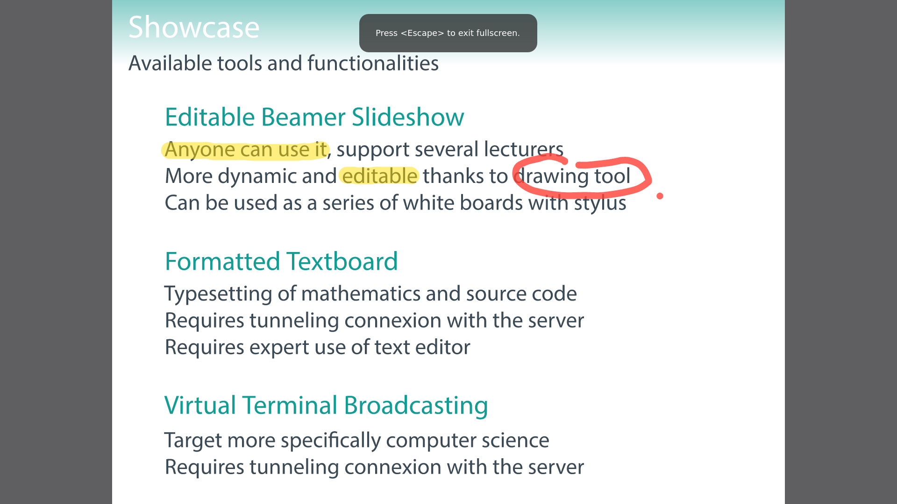

During the COVID-19 pandemic, researchers and teachers in many countries have been forced to work remotely . In the current socio-technological paradigm, people tend to believe that one can easily replace physical presence and equipment by telecommunications and numerical tools. In this spirit, many researchers and teachers used online videoconferences for replacing physical meeting or classroom.
For certain cases, such as pedagogical acts directed towards young students, or large group of students, this seems to be a failure. For other cases, such as professional meetings or international research conferences, this seems to be a great opportunity to reduce the financial and ecological cost of such events.
But in any case, one can regret that relying on videoconference presents important drawbacks. The numerical format of videos, that is a stream of several images per second either captured by a camera or a graphical application, is not really adapted to visual supports in most situations, the main reason being that it requires a great deal of network and computing resources.
One important consequence concerns ecology, accessibility and freedom. Ecology because powerful hardware and networks demand rare materials, big infrastructures and energy. Accessibility because not everyone has access to these resources. Freedom because so far, institutions which are able to serve large-scale and user-friendly videoconferences are all private corporations, running proprietary software on their own hardware; both hardware and software over which the end user has no practical control.
It is a fact that most of the French higher education and public research during the academic year 2020–2021 heavily relied on Zoom and Teams, in spite of official recommendations against it.
Currently, videoconference is actually so resource demanding that, more often than not, users still experience latency and mediocre resolution images. At the very least, it would be more judicious to broadcast actual character stream for text and scalable vector graphics for drawings.
For these reasons, I wrote a free software providing sparing visual supports for live remote lecture. It is a very simple Node.js server relying on socket.io for interactions and communications, with the following tools.
In its current state, it is only a proof of concept and not a software ready for deployment, but it can readily be used by anyone with a port open to the world wide web; I even hosted it at home, serving simultaneously tens of students on a simple ADSL Internet connection.
Moreover, note that these tools are designed to be used in conjunction with a voice over IP software, providing vocal interaction between the lecturer and the audience. Light and free solutions readily exist, see in particular Mumble
|  | |
| Lecturer interface | Listener view |
| <b>Exercice 30</b> <br/> <br/> Suite de Fibonacci : $u_0 = u_1 = 1$ et $∀ n ≥ 2, u_n = u_{n - 1} + u_{n - 2}$. <br/> <br/> (a) Il s'agit d'une <i>suite récurrente linéaire d'ordre deux</i>, de polynôme caractéristique $X^2 - X - 1$, dont les racines sont $r_1 = {1 - √{5}}/{2}$ et $r_2 = {1 + √{5}}/{2} = φ$ (le nombre d'or). Or $│r_1│ < 1$, donc ${r_1}^{n} {→}↙{n → +∞} 0$, et on déduit $u_n = \Θ(φ^{n})$. <br/> <br/> (b) <pre><code class="lang-pseudo"> Algorithme Fibonacci : n → u selon Si n ≤ 1 alors u ← 1 sinon u ← Fibonacci(n − 1) + Fibonacci(n − 2) . . </code></pre> <br/> | Pour étudier expérimentalement ce qui précède, traduisons l'algorithme en langage C, qui permet les formulations récursives. <pre><code class="lang-c"> int fibonacci(int n) { if (n <= 1){ return 1; }else{ return fibonacci(n - 1) + fibonacci(n - 2); } } </code></pre> <br/> (c) Si l'on veut écrire une version itérative de cet algorithme, |